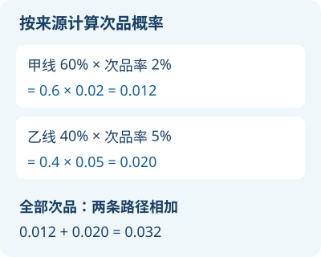

第1章 随机事件与概率
这一章先说清楚“什么算发生”，再计算发生的可能性，最后学习怎样利用已知信息更新判断。概率没有单位；本章只需集合运算、分数和简单计数。
阅读与核对：正文按用户提供教材纸页1—17的顺序整理，习题见纸页17—19。教材算例以原编号标出，新增例题另注；主要数值和事件关系已独立复算。本站解答为独立整理，未与出版社答案逐题核对。
1.1 随机事件及运算
先确定试验和记录方式
掷一次骰子，事先知道可能是1至6点，却不能确定本次是哪一点。随机试验通常有三个特点：可在相同条件下重复；已知可能结果的范围；一次的结果不能预先确定。“试验”也包括观察，例如记录一天的顾客数。
所有可能的基本结果组成样本空间Ω，其中一个结果叫样本点ω。满足某个条件的一组结果叫事件A。试验实际出现ω，当且仅当ω∈A时说A发生。严格区分：ω是一个结果，{ω}是只含它的基本事件。
| 记录内容（对应教材例1.1—1.5） | 一种样本空间 |
|---|---|
| 一次硬币的朝向 | {正，反} |
| 一次骰子的点数 | {1,2,3,4,5,6} |
| 一天顾客数 | {0,1,2,…} |
| 固定周期T内的等车时间 | [0,T]，T>0 |
| 非负灯泡寿命 | [0,+∞) |
这些集合只列可能结果，还没有规定各结果概率。固定周期也不自动说明到站时刻均匀。遇到开放或闭合端点，按具体记录规则决定。
硬币掷两次，记录顺序时Ω={正正,正反,反正,反反}；只记录正面次数时可用{0,1,2}。公平且独立时，四个有序结果各占1/4，所以次数0、1、2的概率分别是1/4、1/2、1/4，并非各1/3。
检查样本空间：有没有漏掉结果？一次记录能否唯一对应一个样本点？是否有等可能依据？后面用计数求概率前都要检查。
把文字翻译成集合
Ω是必然事件，∅是不可能事件。本页用Aᶜ代替教材的字母上方横线；用⊆表示允许相等的包含关系。教材本章的⊂也用于允许相等的包含。
| 记号 | 意思 |
|---|---|
| A⊆B | A发生必然有B发生；不等于反向也成立 |
| A=B | 两个集合包含的结果完全相同 |
| A∪B | 至少一个发生，允许同时发生 |
| A∩B或AB | 两个都发生 |
| A−B=ABᶜ | A发生而B不发生；通常不等于B−A |
| Aᶜ=Ω−A | A不发生 |
| AB=∅ | 互斥：不能同时发生 |
一次骰子中A={4,5,6}、B={2,4,6}。合并且不重复列点得到A∪B={2,4,5,6}；公共点给出AB={4,6}；从A去掉公共点得到A−B={5}；Ω中余下的点给出Aᶜ={1,2,3}。
互斥不一定对立。{1}与{2}互斥，却漏掉3—6。对立还要求A∪B=Ω。若若干事件两两互斥且合起来覆盖Ω，就构成完备事件组（划分）；例如{1,2}、{3,4}、{5,6}。只取前两组会漏结果，不能用作全概率公式的全部来源。
运算规律与“至少、至多”
并、交都有交换律和结合律。分配律有两种：A(B∪C)=AB∪AC；A∪(BC)=(A∪B)(A∪C)。括号不是装饰，先按括号判断事件，再化简。
(AB)ᶜ=Aᶜ∪Bᶜ
这两条德摩根律说：“至少一个发生”的反面是“全不发生”；“全部发生”的反面是“至少一个不发生”。同样适用于有限个或可列个事件。
把A、B、C看作三台设备故障，逐种情况检查：
| 目标 | 表达式 |
|---|---|
| 只有A故障 | ABᶜCᶜ |
| 三台全故障／全不故障 | ABC／AᶜBᶜCᶜ |
| 至少一台故障 | A∪B∪C |
| 至少两台故障 | AB∪AC∪BC（含三台全故障） |
| 至多一台故障 | (AB∪AC∪BC)ᶜ |
| 至多两台故障 | (ABC)ᶜ |
| 恰好两台故障（补充） | ABCᶜ∪ABᶜC∪AᶜBC |
“A发生而B不发生”的反面是(ABᶜ)ᶜ=Aᶜ∪B。不能写成AᶜB，因为那只覆盖反面的一部分。
1.1自测｜先写集合，再检查
①两次硬币，写“至少一次反面”。②骰子A=不超过3、B=奇数，求交、并、Aᶜ。③“恰好一项检验合格”是不是“两项都合格”的对立？④{1}与{2}是否对立？
①{正反,反正,反反}。②AB={1,3}，A∪B={1,2,3,5}，Aᶜ={4,5,6}。③不是，还漏了两项均不合格；恰好一项应写ABᶜ∪AᶜB。④互斥，但不是对立，因为没有覆盖Ω。
1.2 概率的定义与性质
1.2.1 古典概型：有限且等可能
只有有限、等可能两个条件都满足才能这样算。教材例1.8—1.9中，独立公平的两次硬币有4个等可能有序结果，恰好一次正面占2个；两枚独立公平骰子有36个有序结果，点数相同占6个。答案分别为1/2和1/6。
先补计数：互不重叠的几类办法用加法；一个办法分若干步骤、每个前序分支后有确定且相同的选择数时用乘法。若后续选择数不同，先分情况再相加。例如从4本数学书、3本物理书中各选一本有4×3=12种；只选一本有4+3=7种。
C(n,k)=n!/[k!(n−k)!]，0≤k≤n
n!=n(n−1)…1，0!=1（选零件只有空选法这一种）。交换顺序算新结果用排列A(n,k)；只关心选中哪几件用组合C(n,k)。每个k件组合被排列重复计算k!次，故需除以k!。四人选组长和记录员有4×3=12种，只选两人参加有12/2=6种。
10件产品中3件次品、7件正品，不放回随机选4件，每个4件组合等可能。总数C(10,4)=210；恰好两件次品时，选次品C(3,2)=3种，选正品C(7,2)=21种，合起来63种。因此P=63/210=0.3。
推广：N件中M件次品，不放回取n件（0≤n≤N），恰好k件次品：
k必须同时满足0≤k≤M、0≤n−k≤N−M，即max(0,n−N+M)≤k≤min(n,M)。下限不能漏：正品太少时不可能一个次品也不抽到。分子分母始终都按无序组合。
若改为每次放回、混匀，且各次独立，单次p=M/N。指定k次次品的概率为pk(1−p)n−k，这样的次序有C(n,k)种，故P=C(n,k)pk(1−p)n−k。本例变成6×0.3²×0.7²=0.2646。比例相同不代表放回与不放回答案相同。
n个有标号球各自独立、等概率落入N个有标号盒，总结果Nn；若n≤N，互不碰盒的选法依次有N、N−1、…、N−n+1种：
教材生日模型相当于N=365，忽略闰日及生日季节差异，并假设不同人的生日独立均匀。50人至少两人同生日的概率为1−365×364×…×316/36550≈0.970374。n>N时不碰盒概率为0。
只说“每个球分别等概率进盒”仍不足以相乘。例如所有球总是跟第一个球进同一盒，各球各自仍均匀，却必定碰盒。独立是教材计算需要补明的模型条件。
1.2.2 几何概型：均匀区域的度量比
样本空间是长度、面积或体积有限且大于0的区域，结果在该区域按相应度量均匀时，P(A)=A的度量/Ω的度量。连续不等于均匀；也不存在“在整条无限数轴每单位长度同样可能且归一”的这种均匀模型。
两人在长T的时间段内到达，较早者最多等待t，0≤t≤T。明确假设两人到达时刻X、Y独立且各自均匀，则(X,Y)在边长T的正方形内均匀；相遇条件是|X−Y|≤t。没有相遇的上下两个直角三角形直角边均为T−t，面积合计(T−t)²，所以：
检查t=0得到0，t=T得到1；等候15分钟、到达时间段60分钟时得7/16。只给两人的边缘分布均匀而未给独立，答案不唯一：若总有Y=X，即使t=0也会相遇，且各自仍均匀。
教材例1.14：在[0,1]均匀取数，落在(0,1/4)概率1/4；恰好取到1/2的单点长度为0，概率为0，但单点不为空；落在(0,1)概率为1，但该事件不等于Ω=[0,1]。因此P(A)=0不保证A=∅；P(A)=1也不保证A=Ω。有限等可能模型的直觉不能直接推广。
1.2.3 频率与统计观点
做n次试验，A实际发生m次，则频率fn(A)=m/n。它是观测值，会随机波动；概率是模型赋给事件的数。独立且成功概率保持为p的重复试验，频率会依概率接近p（第5章说明），不是每增加一次样本误差都变小，也不意味着前面反面多、下一次正面就必须“补回来”。
表中次数4040/正面2048给出0.5069；12000/6019给出0.5016，均与四位小数相符。最后一行写24000次、12018次正面，却列频率0.5005。按这两个给定次数重算：12018/24000=0.50075，四舍五入为0.5008。这里只指出表内算术不一致，不据此断定哪项历史原始记录有误。
1.2.4 公理与概率性质
统一的概率规则是：①任何事件概率非负；②P(Ω)=1；③两两互斥的可列事件之并，其概率等于各概率之和。可列指能按1、2、3、…编号；有限个事件的可加性是它的特例。不能把不可列个单点概率0直接相加来求区间概率。
下面的式子不要求事件独立：
| 性质 | 由什么分解得到 |
|---|---|
| P(∅)=0 | Ω与∅互斥，P(Ω)=P(Ω)+P(∅) |
| P(Aᶜ)=1−P(A) | Ω=A∪Aᶜ，不重不漏 |
| A⊆B⇒P(A)≤P(B) | B=A∪(B−A)，后一项非负 |
| P(B−A)=P(B)−P(AB) | B=(AB)∪(B−A)，两部分互斥 |
| 0≤P(A)≤1 | 由∅⊆A⊆Ω得到 |
P(A∪B∪C)=P(A)+P(B)+P(C)
−P(AB)−P(AC)−P(BC)+P(ABC)
两事件先加把公共部分算两次，故减一次。三事件的三重重叠部分应直接数第一次加三次、第二轮减三次，共0次，最后加一次，才恰好计入一次。一般n事件容斥按单项加、两两减、三项加、四项减…继续。只有交概率为0时两项才可直接相加，互斥是保证交概率为0的充分条件。
1—100等概率取一个整数。3的倍数有⌊100/3⌋=33个，4的倍数有25个；两者都满足就是12的倍数，有8个。故能被3或4整除的概率为(33+25−8)/100=1/2。12、24等在相加中被算两次，所以必须减一次。
1.2自测｜检查计数、条件与结果
①五人选两人，不分职位；若分两个职位呢？②4红2蓝不放回抽两球，恰好一红一蓝？③P(A)=0.6，P(B)=0.5，P(AB)=0.2，求并与Aᶜ。④在1m线段上均匀取点，距左端不超过0.2m？
①C(5,2)=10；排列5×4=20。②C(4,1)C(2,1)/C(6,2)=8/15。③0.6+0.5−0.2=0.9，1−0.6=0.4。④0.2/1=0.2。每题须先说明为什么各组合等可能、为什么可以用长度比。
1.3 条件概率与事件的独立性
1.3.1 条件概率和乘法公式
已知A发生后，只看A中的结果，并把它们的概率重新归一。若P(A)>0：
P(AB)=P(A)P(B|A)
竖线右边是条件，左边是目标。分母是已知条件的概率，分子是条件和目标同时满足的概率。它本身满足非负、归一和对互斥事件的可列可加性。若P(A)=0，不能用这个比值；后续连续变量条件分布需要另行定义。
公平骰子，A=点数大于4={5,6}，B=偶数={2,4,6}，AB={6}。P(A|B)=(1/6)/(3/6)=1/3；P(B|A)=(1/6)/(2/6)=1/2。共同部分相同，分母不同。另取B=偶数、目标大于2，条件下三点中有4、6，答案2/3。
多步联合概率逐层使用乘法公式。若P(AB)>0，P(ABC)=P(A)P(B|A)P(C|AB)。一般顺序乘到n项时，每一个分母所对应的前缀交事件都须有正概率。因分子分母逐项约去，这个公式不要求独立，也不要求条件一定先在时间上发生。
某动物活到20岁的概率0.8、活到25岁0.4。后者B包含于前者A，所以AB=B；已活到20岁后再活到25岁的概率为0.4/0.8=1/2，不能相乘成0.32。
3黑3白，连续不放回取3球都黑：第一次3/6；已取黑后第二次2/5；已取两黑后第三次1/4。联合概率=(3/6)(2/5)(1/4)=1/20。组合检查C(3,3)/C(6,3)=1/20。分母与黑球数都在改变。
不放回时两球都红的概率(3/5)(2/4)=3/10；若只问“已知首次红，第二次红”，答案为2/4=1/2。若放回且独立，则两次都红为(3/5)²=9/25。条件概率、联合概率和另一种抽样规则是三个不同问题。
1.3.2 两个事件独立
定义不需要两项概率都大于0。若P(A)>0，才可等价改写为P(B|A)=P(B)：得知A没有改变B的概率。独立是相对于当前概率模型的关系，不是单凭名字或时间先后就能确定，也不等于因果结论。
两个正概率事件若互斥，其交概率0与正的乘积不等，故不独立。概率0事件与任意事件都独立，因为交概率也为0，但不一定与任意事件互斥。Ω也与任意事件独立，是否互斥另看集合。
独立时，A与Bᶜ、Aᶜ与B、Aᶜ与Bᶜ也分别独立。例如P(ABᶜ)=P(A)−P(AB)=P(A)[1−P(B)]，另外两式同理。
52张牌等概率取1张，A=K、B=黑色。P(A)=4/52，P(B)=26/52，P(AB)=2/52，正好等于前两项乘积，故独立。一次试验里定义的两个事件也能独立。
两人独立射击，命中概率0.6、0.5。至少一人中H=A∪B，P(H)=0.6+0.5−0.3=0.8；由于A⊆H，P(A|H)=0.6/0.8=3/4。这里“甲命中”包括两人都命中，不等于“只有甲中”。
1.3.3 两两独立与相互独立
三个事件相互独立，需要三条两两乘积式，再加P(ABC)=P(A)P(B)P(C)，共四条。一般n事件，需要任取至少两个事件的交都满足乘积式；只核对最大的n重交也不够。相互独立的一组，取子组、任意一些换成其对立事件，仍相互独立。
四面等概率，三面分别只有红、白、黑，第四面三色都有。A、B、C分别为红、白、黑着地。每色占2面，所以概率各1/2；任意两色同时出现仅占三色面，交概率1/4，故两两独立。三色交也为1/4，却不等于(1/2)³=1/8，所以不相互独立。
旧硬币例表达同一道理：两次独立公平硬币，A=首次正、B=第二次正、C=两次同面；三个概率各1/2，两两交各1/4，三重交为1/4。可自行列四个有序结果验证。
P(至少一个发生)=1−∏[1−P(Aᵢ)]
第二式先用德摩根律把“全不发生”写成各补事件的交，再用独立性相乘，最后取补。只有两两独立时，不能保证三项以上这样乘。
三台机器正常概率0.9、0.8、0.85。额外采用三台状态相互独立的模型，全部正常概率0.9×0.8×0.85=0.612；至少一台正常为1−0.1×0.2×0.15=0.997。教材题干只列边缘概率，解答直接用了独立；若有共用电源故障等相关性，边缘概率不能唯一确定这两个结果。
每次独立成功率0.5，要至少一次成功的概率≥0.9，需1−0.5n≥0.9。取对数得n≥ln0.1/ln0.5≈3.32193；因除以负数不等号反向，最小整数n=4。检查n=3时0.875不够，n=4时0.9375满足。
旧新编例：p=0.2独立试3次，至少一次为1−0.8³=0.488。不能用3p，因为三次成功事件可能重叠。
1.3自测｜条件、独立与至少一次
①2红3蓝不放回，已知第一球蓝，第二球红？②独立两次p=0.3，都成功、至少一次、恰好一次？③骰子A=偶数、B=大于4，是独立还是互斥？
①剩2红2蓝，条件概率1/2。②0.09；1−0.7²=0.51；2×0.3×0.7=0.42。③P(AB)=1/6=(1/2)(1/3)，故独立；出现6时同时发生，故不互斥。
1.4 全概率公式和贝叶斯公式
先把目标拆成互不重叠的来源
A₁,…,Aₙ两两互斥且并为Ω，P(Aᵢ)>0。对任意B，B=(A₁B)∪…∪(AₙB)，各块互斥；先用可加性，再用乘法公式：
=Σi=1…nP(Aᵢ)P(B|Aᵢ)
这是全概率公式。每条“来源且结果”的路径相乘，不同来源路径相加。来源必须不重不漏，不需要来源与B独立。零概率来源对总概率贡献0，可先去掉，不把未定义的条件概率硬写成0。
已经看见B，反推哪一个来源
若P(B)>0，由条件概率定义：
=P(Aᵢ)P(B|Aᵢ)／Σj=1…nP(Aⱼ)P(B|Aⱼ)
这就是贝叶斯公式。P(Aᵢ)是看到B以前的先验概率；P(B|Aᵢ)是每个来源产生所见结果的概率；分子得到来源权重，除以所有权重之和成为后验概率。各后验相加应为1。分类不必是时间先后或因果关系；贝叶斯公式自身不能证明因果。
从全部产品中随机取一件，甲、乙、丙的产量占比0.25、0.35、0.40，次品率0.05、0.04、0.02。令B为次品，按产量占比而非“每台各1/3”列路径：
| 来源 | P(Aᵢ) | P(B|Aᵢ) | P(AᵢB) |
|---|---|---|---|
| 甲 | 0.25 | 0.05 | 0.0125 |
| 乙 | 0.35 | 0.04 | 0.0140 |
| 丙 | 0.40 | 0.02 | 0.0080 |
次品总概率0.0345。已知次品后，甲、乙、丙来源概率分别0.0125/0.0345=25/69≈0.3623，28/69≈0.4058，16/69≈0.2319；三项和为1。次品率最高的甲不必是次品中最常见的来源，还要看产量。
甲乙产量比60%/40%，次品率2%/5%，两条路径为0.012、0.020；总次品概率0.032，已知次品后乙的来源概率0.020/0.032=0.625。可把10000件按期望份额看成甲6000件约120次品，乙4000件约200次品，200/(120+200)=62.5%。这是期望数量示意，不保证每个实际批次恰好如此。

不要把5%=P(次品|乙)当成62.5%=P(乙|次品)：两个问题的条件相反。
12件中4次品8正品，先不放回取1件，再取2件。设A=第一件次品，B=后两件均正品。P(A)=1/3；若A发生，剩8正品/11件，P(B|A)=C(8,2)/C(11,2)=28/55；若第一件正品，P(B|Aᶜ)=C(7,2)/C(11,2)=21/55。
P(B)=(1/3)(28/55)+(2/3)(21/55)=14/33；故P(A|B)=[(1/3)(28/55)]/(14/33)=2/5。反向检查：已知后两件正品后，第一件等同于剩下10件中的随机位置，其中4次品，所以4/10=2/5。后来得到的信息能改变对过去未知结果的判断，不是改变过去的事实。
三张签一张中奖，随机不放回依次抓，事前每个位置中奖概率都是1/3。第二人可按第一人中/不中分：P(第二中)=(1/3)×0+(2/3)×(1/2)=1/3。
第三人按“前两人至少一个中”与“前两人都不中”分组。由于只有一张中奖签，前者概率2/3、此时第三人中概率0；后者概率1/3、此时第三人必中，故(2/3)×0+(1/3)×1=1/3。已知前两人不中时，第三人的条件概率是1，与事前1/3不矛盾。
原扫描记号提醒：纸17第三人的推导先按A₁∪A₂分组，后行却把其对立写成(A₁A₂)ᶜ。两者不同：A₁A₂=∅，所以(A₁A₂)ᶜ概率为1；所需事件实际是(A₁∪A₂)ᶜ=A₁ᶜA₂ᶜ，概率才为1/3。本讲义按不重不漏的正确划分推导。
1.4自测｜来源权重与后验
甲乙产量占0.7、0.3，故障品率0.01、0.04。求故障品概率和已知故障品来自乙的概率。
两条路径分别0.007、0.012，总概率0.019；乙的后验0.012/0.019=12/19≈0.6316。分母是所有故障品，甲的后验7/19，两项和1。
新编练习
题 1：分清“至少”和“恰好”
一枚公平硬币独立掷 3 次。求（1）恰好出现 1 次正面的概率；（2）至少出现 1 次正面的概率。
查看解答
每个有序结果概率为 1/8。恰好一次正面可出现在 3 个不同位置，概率为 3/8。至少一次正面的对立事件是 3 次全反，概率为 1/8，所以所求为 1−1/8=7/8。第二问包括出现 1、2 或 3 次正面，不能直接使用第一问的答案。
题 2：有条件信息时换分母
从 5 个红球、3 个蓝球中随机不放回抽两次。已知第一次是蓝球，求第二次是红球的概率。
查看解答
在已知第一次蓝球的条件下，剩余 5 红 2 蓝，共 7 个，所以答案为 5/7。不是 5/8，因为第一次抽出的球没有放回。如果求“第一次蓝且第二次红”的联合概率，则为 (3/8)(5/7)=15/56，是另一个问题。
题 3：贝叶斯公式的方向
两台机器 A、B 分别生产 80%、20% 的产品，次品率分别为 1%、4%。随机抽到一件次品，求来自 B 的概率。
查看解答
来自 A 且次品的概率为 0.8×0.01=0.008；来自 B 且次品为 0.2×0.04=0.008。全部次品概率为 0.016，故 P(B|次品)=0.008/0.016=1/2。虽然 B 次品率高，但它只生产 20%；这里 4% 是 P(次品|B)，不是 P(B|次品)。
本章回顾：先读条件，再选公式
| 工具 | 使用条件与检查 |
|---|---|
| 有利数/总数 | 有限、等可能，分子分母同一计数口径 |
| 长度/面积/体积比 | 按相应度量均匀，分母有限且>0 |
| 两事件加法 | 一般都须减P(AB)，不要求独立 |
| P(B|A)=P(AB)/P(A) | P(A)>0；看准右侧条件 |
| P(AB)=P(A)P(B|A) | P(A)>0；未独立时不能去掉条件 |
| P(AB)=P(A)P(B) | 独立时成立，也是检验独立的定义 |
| 1−∏(1−pᵢ) | 相互独立，求至少一个；不只两两独立 |
| 全概率与贝叶斯 | 来源完备互斥，使用条件概率的来源正概率；反推时P(B)>0 |
做题顺序：明确记录及随机规则→设事件→写目标→检查公式条件→代数计算→检查范围、特例和后验归一。全不发生、至少一项、恰好一项要区分；互斥、独立、对立也要分别检查。
整章自检：不用翻答案解释理由
能否解释：①为什么两骰点数和不能直接按11种等可能计算？②P(AB)=0为何未必互斥？③不放回第二次的无条件概率与给定首次结果后的条件概率为何不同？④边缘分布均匀为何不够求约会面积？⑤已知次品时为什么分母要用所有来源的次品总概率？
核对思路
①每个和对应的有序结果数不同。②连续模型非空单点可为零概率。③后者缩小了信息范围，前者还须按所有首次结果加权。④联合分布还取决于关联，独立才能得到均匀正方形。⑤我们正在全部次品内重新划分来源，必须先归一。
来源：用户提供的王丽主编《概率论与数理统计》，科学出版社，2026年第1版，纸1—19，已目视核对；本页推导与新增说明为独立整理，自绘图不取自视频。未声称看过或总结任何视频，也未见出版社习题参考答案内容。